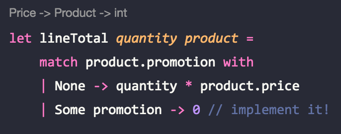
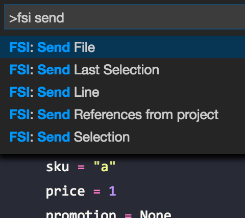

Type Driven Domain Modelling, part 2
This is part 2 of a series:
We wrote our initial domain in part 1. The user produces an event called AddToBasket, with a product and a quantity. Then we wrote a function that takes a list of events, and produces a read model to send to the client to be rendered.
In this second part we'll add promotions to products, and make sure total calculations are right!
Spec
In the second part of the series, we'll add what I call quantity promotions: they are the classic "buy N for X". For instance, an item costs $3, but we can buy 2 for $5. This is the promotion we're going to model in this post.
Modelling A Promotion
The starting point for this code is here.
First, let's start with the Promotion itself, and add it to the Product type:
type Promotion = {
promoQty: Qty
promoPrice: Price
}
type Product = {
sku: Sku
price: Price
promotion: Promotion option
}It's modeled as an Option, since not all products have a promotion.
With that in mind, we need to change the buildLine function to account for promotions. Let's build a function to calculate the total of a line, given a product and a quantity:
let lineTotal quantity product =
match product.promotion with
| None -> quantity * product.price
| Some promotion -> 0 // implement it!
let buildLine product quantity = {
productSku = product.sku
quantity = quantity
lineTotal = lineTotal quantity product
}Everything is working up to this point, but one thing bothers me: because both Qty and Price are aliases for int, the inferred types are often confused:

We could fix this particular case by "forcing" a Qty type to quantity, but I think there's a bigger message here: quantity and price are not the same thing!
Within our domain, there is one property of quantity that can help us model it: it's never negative. Another property is that it has to be able to do some arithmetic; we need to be able to sum and divide quantities at least.
Looking through the primitives of F#, I found one that can help us: unsigned ints! I think that uint16 is a good choice, since it's a integer with a 0 - 65535 range. As a bonus, it also has all the arithmetic between uint16 implemented:
type Sku = string
type Price = int
type Qty = uint16
let createQty (n : int) : Qty =
if n > 0 then (uint16 0) else (uint16 n)I also created a little helper to create a Qty from an int, just because. :)
Calculating Totals
Now, we can right away see an error in the lineTotal call, since it is inferring that it takes a Price, and not a Qty. Before fixing it, I can see that we're gonna need an important functionality: we need to be able to multiply a quantity by a price! And it needs to return a price. This is a key function in our domain, so let's implement it:
// super cool custom operator!
let (*) (qty : Qty) (price : Price) : Price =
int qty * price
let lineTotal quantity product =
match product.promotion with
| None -> quantity * product.price
| Some promotion -> 0 // implement it!Much cleaner. Now, the difficult part: actually calculating the total of a line, when the product is promoted. Let's do some TDD-ish programming, since it's easy to make some mistakes in calculations like these. First, a stub of the function itself:
// Domain.fs
let promotedTotal quantity price promotion = 0
// Tests.fs
(...)
testProperty "promoted line total" <| fun (N : Qty) ->
let promoQty = N + (createQty 2)
let promotion = { promoQty = promoQty ; promoPrice = 7 }
let promoted = promotedTotal promoQty 10 promotion
let notPromoQty = N + (createQty 1)
let notPromoted = promotedTotal notPromoQty 10 promotion
let promotedExpected = 7
let notPromotedExpected = notPromoQty * 10
Expect.equal promoted promotedExpected "same price as promotion"
Expect.equal notPromoted notPromotedExpected "multiplied by regular price"I also had to correct the other tests to work with the new Product and Price types. The final version of the test file is here. Fixing these errors is very direct, since it only involves "getting rid of the red underlinings" that Ionide + the compiler signal. It's never - ever - that easy in JS, or any other dynamic language for that matter. It's a much more stressful activity, and stressful activities drain your energy.
The test is simple: if I have a promotion "buy N for $7", if I add N to the basket, my total is 7. If I add N - 1, my total is (N - 1) * unit price. (I use N + (createQty 2) here to guarantee that I don't have any unwanted zeros).
Now, the implementation:
let promotedTotal quantity price promotion =
let promotedQty = quantity / promotion.promoQty
let promotedTotal = promotedQty * promotion.promoPrice
let notPromotedQty = quantity % promotion.promoQty
let notPromotedTotal = notPromotedQty * price
promotedTotal + notPromotedTotal
let lineTotal quantity product =
match product.promotion with
| None -> quantity * product.price
| Some promotion -> promotedTotal quantity product.price promotionRun the Expecto tests, and there we have it! Working totals :)
Experimenting With The Domain
Even though the project has no compile errors and the tests are ok, it's still good practice to experiment with the types and functions. At the very least you will be able to rest easy seeing that everything is working, right?
A good way of doing this is by creating a script file, including our Domain module, and just sending code to F# Interactive. For instance, I created a Experiments.fsx file, with the following contents:
#load "Domain.fs"
open Domain
let productA = {
sku = "a"
price = 1
promotion = None
}
let productB = {
sku = "b"
price = 2
promotion = Some {
promoQty = createQty 3
promoPrice = 5
}
}
let events = [
AddToBasket(productA, createQty 5)
AddToBasket(productB, createQty 7)
AddToBasket(productA, createQty 4)
]
let myBasket = List.fold update empty eventsI created a couple of products, one with a promotion. Then I created a series of events, and built a basket with it. With Ionide it's easy to run:

Now we can play with different products and events, and check the results!
Conclusions
Changing F# code is so smooth, it's almost fun. And this is a good thing - it's a sign that it does not drain a lot of energy from the developer. We can focus on the models and algorithms without using a lot of energy with silly errors from the changes we're making.
Whenever we do a lot of cognitive-intense work, we get tired. There's no escape to that. And when we get tired, we make mistakes. In the projects I've worked on, I think 90% of the simple errors that were deployed to production were deployed by tired developers. So, that's another positive contribution from F# and its tooling and ecosystem to a project's safety, in the sense that no unwanted accidents happen in production.
The final code for the domain is here, and the final code for the tests are here.
Next Steps
Imagine we want not only to show the calculated totals, but we also want to show to our users how much they are saving on each line, and in the basket as a whole. I'll cover this in Part 3 of this series!